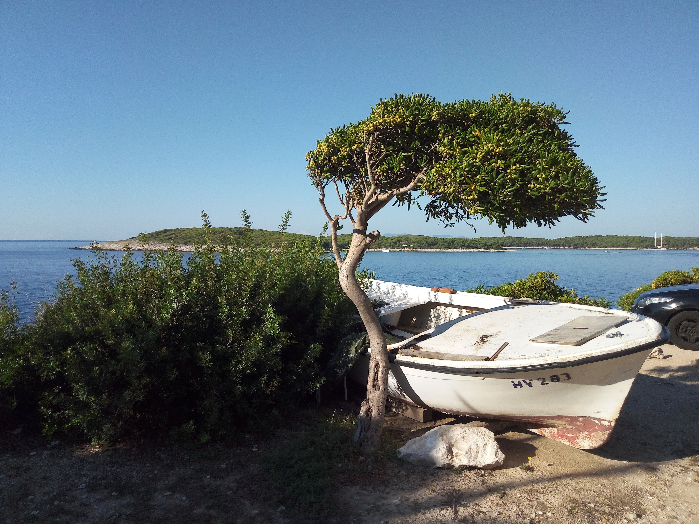

Hvar
Croatia · Adriatic Coast
Hvar is one of Croatia's most captivating Adriatic destinations,
known for its historic stone streets, beautiful waterfront, and
unmistakable Mediterranean character. The island combines centuries
of history with the relaxed atmosphere of coastal life, where
traditional architecture, lively harbour views, and the deep blue
Adriatic create a memorable setting.
Walking through Hvar Town offers a glimpse into its rich past,
while the surrounding coastline reveals the natural beauty that
makes the island so special. These photographs capture my personal
memories and impressions of Hvar, preserving moments from my time
exploring this remarkable corner of Croatia.
My Photo Gallery
Explore my personal photographs and travel memories from Hvar, Croatia.
View All Photos ↗